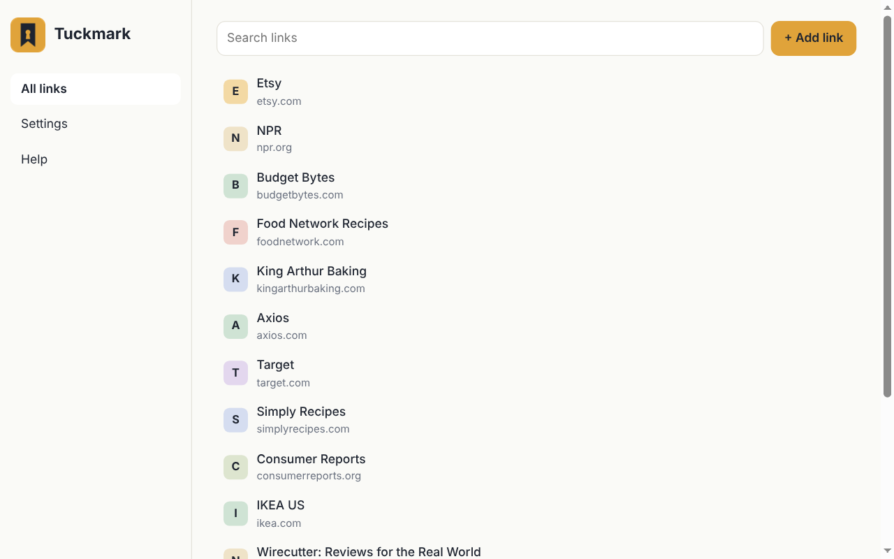

Two passphrases, two lists, one vault
- Create your vault with a passphrase only you know. Save links from the toolbar with Alt+Shift+S.
- Right after setup, Tuckmark offers a decoy passphrase. Pick some everyday topics and it fills that list with well-known sites and realistic dates.
- Each passphrase opens its own list. Both lists look and work the same, and the vault takes the same space on disk whether or not a second list exists, so the screen and the storage don't reveal whether a second list exists.
Skipped it at setup? Open Settings and press Ctrl+Shift+D.

Built for the moment someone else is at your screen
Panic lock
Alt+Shift+L locks the vault and closes the tabs you opened from it.
No trace in history
Optionally removes the links you open from Tuckmark from your browser history.
Break-in alert
After you unlock, Tuckmark tells you if someone typed a wrong passphrase while you were away.
Locks itself
When you close the popup, after the idle time you choose, when the screen locks and when the browser restarts.
Real encryption
Argon2id and AES-256-GCM. While locked, nothing readable is stored: no titles, no addresses, no counts.
Backups you control
Export an encrypted backup file and restore it on another computer.
Pricing
Free
$0- Up to 20 links in each list
- Decoy passphrase, panic lock, break-in alert, auto-lock
- Encrypted backups
Tuckmark Pro
$4.99 once- Unlimited links
- Tags and notes
- Import a browser bookmarks file
- Readable export
Buy inside Tuckmark (Settings, Tuckmark Pro). You get a licence key by email; it works on up to 3 browsers. Checking the key sends only the key to our payment provider, Polar, never your links.
Help
Shortcuts
- Alt+Shift+P opens Tuckmark
- Alt+Shift+S saves the page you're on
- Alt+Shift+L locks Tuckmark and closes tabs opened from it
- On the Settings page, Ctrl+Shift+D sets up a decoy passphrase
You can change these in your browser's extension shortcuts page (edge://extensions/shortcuts or chrome://extensions/shortcuts).
What Tuckmark can't do
- There is no recovery. If you forget your passphrase, your links are gone. Keep an encrypted backup.
- Opening a link creates normal browser history unless you use a private window or turn on No trace in history. Even then, pages you click to afterwards are recorded, and your network or employer may still see visits.
- Copied links stay on the clipboard until you copy something else.
- Anyone watching your screen, an administrator, or malware can see what's shown.
- It protects what's on screen, in its storage and in backups. It can't defeat a forensic examination of your computer, and JavaScript can't guarantee memory is wiped after locking.
- If your browser saves your passphrase, anyone who can open your password manager can open Tuckmark.
If you're in danger, consider contacting local support services.
Contact
Questions or a lost licence key: hangrygrogu@gmail.com